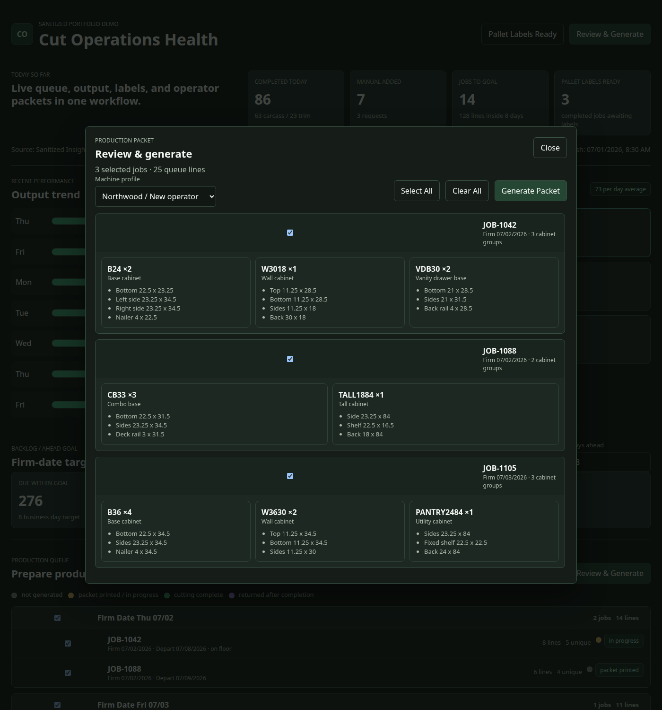
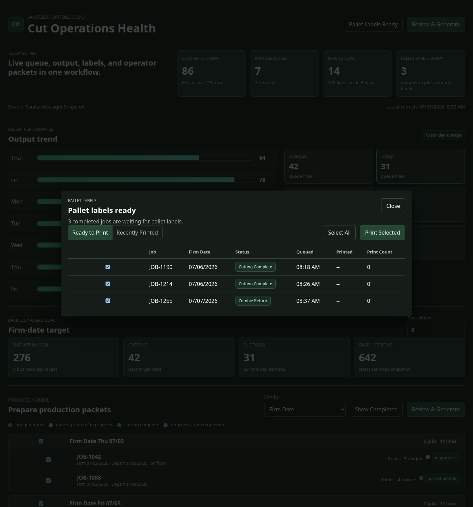
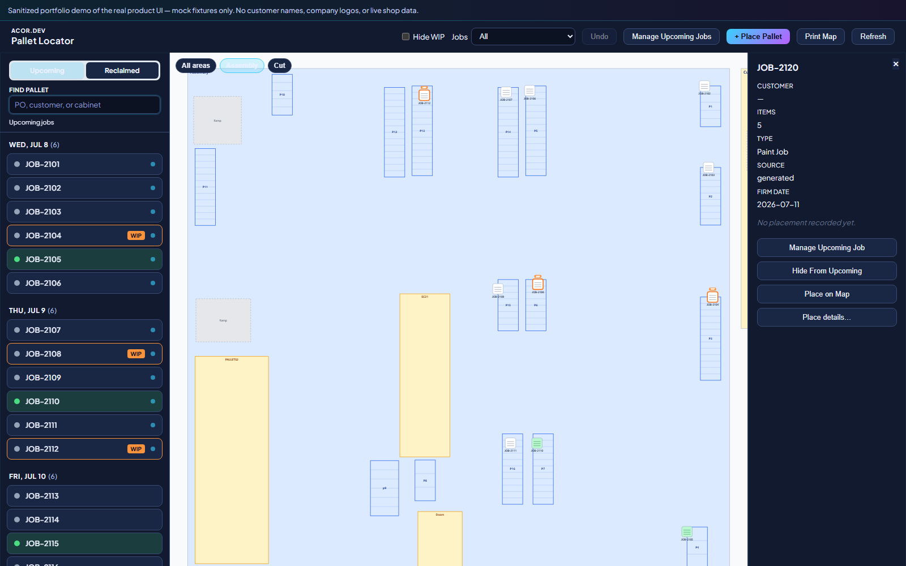
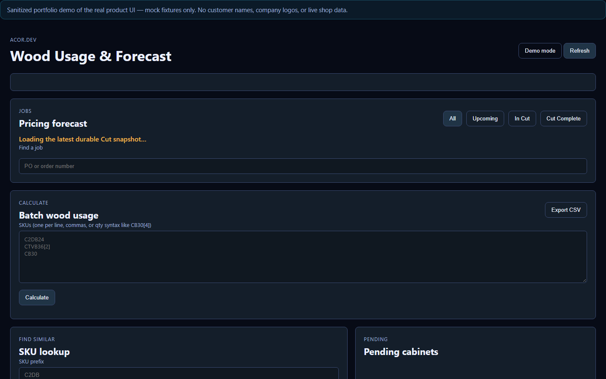

Web-based workflow tools for manufacturing
I build software that fixes real-world workflow problems.
I design and build a connected suite for cabinet production: shared department dashboards, reporting, labeling, forecasting, and machine telemetry — plus a CAD/CNC pipeline that generates machine-ready files and plugs into AutoCAD and Fusion.
That generation layer is easy to undersell and hard to replace: parametric DXFs, catalog builds, nesting batches, program translation, and one-touch mill load. The shop tools started as desktop utilities and now run as clean browser landings. Everything shown here is sanitized: mock data only, no customer or company records.
Site direction
Now web-based
The suite runs as clean browser landings. This site shows the current web interface directly, with the earlier desktop versions kept below only for historical context.
What this site is for
A portfolio of practical software, not a startup pitch.
Instead of explaining these tools from memory in an interview, I can show the problem, the current web interface, an interactive demo, and the reasoning behind it.
Live Web Demos
Sanitized, clickable demos for cut operations, pallet locating, wood-usage forecasting, and warehouse mapping — mock data only, no backend, no customer records.
Machine-ready file generation
Not just dashboards: the suite writes the files production actually runs — DXF, PDF drawings, Fusion catalog builds, nesting MDBs, TAP/XPR programs — with AutoCAD and Fusion plugins in the loop.
Case Studies
Longer write-ups dig into constraints, adoption, UI tradeoffs, and implementation decisions.
Try them live
Four sanitized interactive demos. No login. No customer data.
Click through the real workflows in the browser — cut operations, pallet locating, wood-usage forecasting, and warehouse mapping. Everything uses mock data only.
Recorded click-throughs of the live demos — not a slideshow of stills. Open any card below to use the tools yourself.
Live demo
Cut operations
Queue, packets, labels, backlog, and morning checklist in one landing.
Live demo
Pallet locator map
Search jobs, place pallets on racks, undo moves — the floor map made clickable.
Live demo
Wood usage & forecast
Batch SKU calculate, sheet and machine-time totals, and a readiness forecast list.
Live demo
Warehouse mapper
Rack-faithful floor map with bay-level counting and SKU search — a sanitized slice of the warehouse mapping tool.
Featured project
Web-based production suite
A connected set of browser-based department dashboards that replaced the older desktop tools with one cleaner, faster operational surface.
The suite ties the cut floor together: a live production queue, output and backlog metrics, operator packet review and generation, pallet labeling, end-of-day and morning paperwork, and request tracking, all from a single web landing that a supervisor or operator can open on any machine.
A deliberate design choice was visual familiarity. The layout stays close to the ERP the floor already knew, which lowered training cost and made adoption on the floor much easier.
Clickable, not just a video
The demo below the buttons is the real web interface running on mock data, so the workflow can be explored directly in the browser.
Connected departments
Queue, output, labels, packets, and reporting share one flow, so handoffs stay clear and data stays consistent.
Smart nest split
Machine-required parts nest first; hand cuts fill leftover sheet; only the remainder hits the saw paperwork. How that works →
Operations and reporting
The tools that produce the paperwork the floor actually runs on.
These are the day-to-day capabilities inside the suite: what gets generated, printed, located, and forecast. Screens shown are the current web UI with sanitized data.
Report generation
Operator packets and department papers

One review-and-generate flow builds operator production packets from the live queue: selectable jobs, per-cabinet part lists, and a machine profile. The same reporting layer produces end-of-day cut reports, morning papers and a cut-day brief, production-queue paperwork, and pallet batch sheets.
Output is standardized for print and export so the floor gets consistent documents instead of ad-hoc spreadsheets.
Standardized labels
Barcode and pallet labeling

A ready-to-print and recently-printed queue drives standardized pallet labels, with reprints tracked by count and timestamp. Item labels carry scannable Code 128 barcodes generated from the item number, alongside pallet tape labels and locator gap labels.
Standard label formats mean the same barcode reads the same way everywhere it is scanned downstream.
Pallet locator
Find a pallet by job, on a map

A lightweight web tool that models the warehouse (areas, aisles, racks, locations) on an interactive canvas map. Users browse upcoming jobs, search by job ID, and see a pallet's last known location. Placing or moving a pallet records the spot with undo and mixed-pallet support.
It follows how people actually search on the floor, by job and physical layout, which removes a lot of walking and guesswork.
Price and capacity forecasting
Wood usage, cost, and machine time

A calculator that accepts direct input or CSV-style SKU lists and uses a product catalog to estimate sheet material usage, material and machine cost, expected runtime, and readiness across upcoming jobs.
Unknown products are flagged for catalog follow-up. Reports export to CSV so estimating stays repeatable instead of living in one-off spreadsheets.
Nesting insight
Machine parts first. Hand cuts fill the leftover sheet. The saw only gets what is left.
Some cabinet parts have to run on the CNC. Others are ordinary rectangles that can be cut by hand on a saw — we call those hand cuts. Early on the split was absolute: everything machined stayed on the machine, and every hand cut went to the saw. That was simple, and it left a lot of usable sheet as scrap.
The nesting approach I built flips the order of decisions. Nest the parts that must be machined first. Then, with the remaining open rectangles on those sheets, fill what fits with hand cuts. Whatever still does not fit is what the saw paperwork lists. The operator is not asked to cut items that already nested on the router.
- Must-machine work Parts that need CNC geometry nest onto sheet first.
- Residual fill Hand cuts that fit the leftover material ride along on the same nests.
- Saw remainder + paperwork Only the un-nested hand cuts land on the beam-saw lists and operator packet sheets.
It is not magic utilization software — it is a practical routing rule with matching outputs: nests, handcut companion files, and packet pages that stay consistent with each other.
CAD and CNC pipeline
We generate the machine-ready files — and plug into AutoCAD and Fusion to do it.
Dashboards are only half the story. The generation side of the suite turns parametric cabinet geometry into files the shop can open, nest, load, and cut: DXFs, drawing PDFs, Fusion catalog builds, nesting MDBs, translated NC programs, and released nest sets. AutoCAD and Fusion are not screenshots of someone else’s CAD work — they are first-class plugin targets in the same pipeline.
What gets written
Machine-ready outputs, not mockups
Production starts with files that already match how the floor runs. The tools below author those files from shared rules and dimensions, then hand them to CAM, the mill overlay, or the operator station.
- Parametric DXF
- Corpus PDF plots
- Fusion catalog builds
- Nesting MDB batches
- Hand-cut residual fill
- TAP ↔ XPR / NC
- Released nest sheets
- One-touch mill load
Plugin
AutoCAD plugin
In-AutoCAD command (TLINSERT) inserts a parametric cabinet part as a live block and plots
corpus drawings to PDF. Packaged as a versioned ApplicationPlugins bundle across AutoCAD 2022–2026 —
install once, use it like a native command.
Plugin
Fusion 360 catalog generator
A Fusion script that builds construction and customer views of cabinets from the same geometry rules. Over 1,300 products in the catalog resolve from source-backed definitions — not hand-drawn one-offs.
Generator
Parametric DXF generator
A desktop dialog (and scriptable CLI) that takes a part family and live dimensions and writes a machine-ready DXF. No CAD seat required for the batch path — useful when engineering needs files faster than opening a full drawing session.
MDB batch generation
Generates the Access-format part and grid batches the CAM/nesting path consumes, with title-cased parts, stable cabinet grid numbering, and construction mapping — including the handcut companion when residual fill leaves saw work.
TAP / XPR translation
A safety-bounded converter between metric Syntec XPR/NC programs and inch Selexx TAP programs, with SHA-256 provenance, verified tool mappings, and hard blocks on ambiguous input.
Nest Load mill overlay
A controller overlay that adds a one-touch working-file load on the CNC control, staging nests into the mill's daily folders without touching machine networking.
Machine telemetry
A read-only agent that observes CNC state (program, cycle status, part count) and publishes a durable JSON/JSONL contract the dashboards and reports read. It never controls the machine.
EnRoute production bridge
Watches the CAM preview output, turns each post into cabinet-numbered nest sheets, and publishes one complete released set for the operator station.
Omni cut station
The CNC operator application for a set-based cutting workflow, with a resilient production queue that falls back to local or USB sources when the network share is down.
ICN reconcile
A barcode-scanning utility that resolves scans against the live cut snapshot and regroups the results into an ERP-style, drag-to-group table.
Earlier desktop walkthroughs
The previous desktop generation, kept for context.
These narrated clips show the earlier desktop (EXE) versions of the modules. The suite has since moved to the web-based interface shown above, so treat these as historical background rather than the current UI. A full narrated cut walkthrough is on the YouTube playlist.
Legacy desktop demo
Cut module walkthrough
The deepest walkthrough: department landing, Quick Generate, MDB export for machine components, workbook views, grouped hand cuts, end-of-day material reporting, labels, restock handling, and PO filtering.
Legacy desktop demo
Custom module
Turns a large data set into a workable view with quick filters for frames, doors, drawers, and headers, plus style and color management, label printing, and a report manager for panel and rail cuts.
Legacy desktop demo
Wood usage calculator
Direct input or CSV order lists produce dimensions, material usage, optional pricing and cost, machine runtime, and daily capacity, with unknown items logged for admin follow-up.
Legacy desktop demo
Warehouse mapper and inventory verification
A prototype that models warehouse structure, generates a visual layout with standardized location IDs, and supports confirmed or blind picking counts to catch discrepancies during normal work. The current interactive map experience is in the warehouse mapper demo and the pallet locator demo.
Legacy desktop demo
Administrator application
The central control layer: SQL queries and processing rules updated in one place, tool launching, database review, backups and rollbacks with password encryption, and a bug and feature work queue.
Secondary projects and utilities
Smaller tools and early wins that round out the range.
Not everything is a full suite module. These are standalone utilities and developer tooling, including the tool that started the portfolio.
Standalone utility
Rover
A Windows desktop utility for moving CAM/CNC jobs between machines when tool names do not line up. It scans files, extracts unique tool identifiers, and applies a saved old-to-new mapping across a whole file set, with dry-run preview and optional backups.
An early win and the first public tool here. It is small next to the suite above, but it is real, shipped, and still useful.
Developer tooling
AI Prime
A repo-local CLI for structured AI collaboration: durable project truth, session handoff state, append-only logs, and contract-style planning, with a local contract wizard and no external AI API dependency.
View AI Prime repository →Experimental R&D
AI Gamer
An early experimental system exploring multi-domain meta-learning and transferable reasoning patterns. Presented as exploratory engineering work and technical range, not a polished product.
View AI Gamer repository →About the work
Most of my work sits at the intersection of manufacturing and software.
I tend to work on problems where inefficiency shows up in practical ways: slower output, repetitive manual work, unnecessary mistakes, or handoff issues between departments.
That usually means building tools that are clear, useful, and easy to adopt inside environments that already have established systems and habits, and, lately, moving those tools to a cleaner web-based interface.
What to expect here
Real tools, real constraints, and case studies that explain why the implementation looks the way it does.
Portfolio structure
The web suite and live demos lead; machine-ready file generation and CAD plugins follow; earlier desktop clips stay for context.